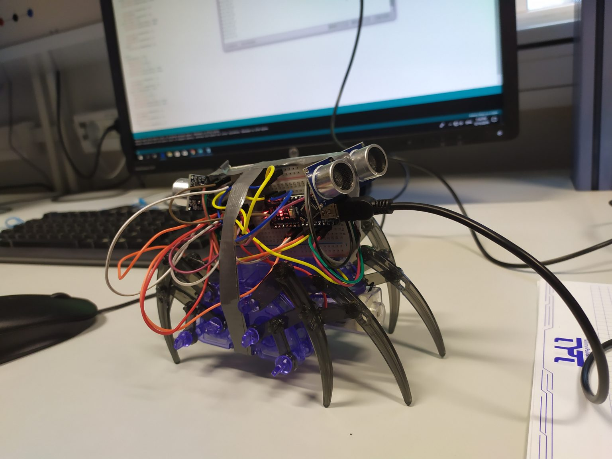
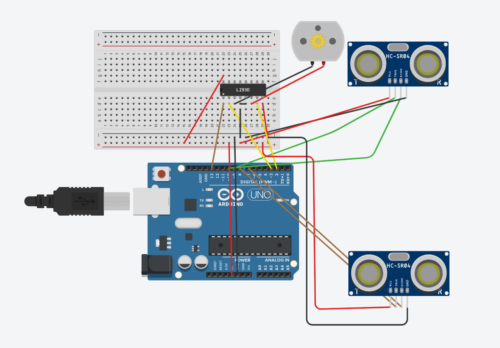

Arduino/Бригадная Учебка
Выполненые задания
Задание 1
Задание 2
Задание 3
Aleksei Stsigartsov
Выйти из аккаунта
Arduino Beast

Состав устройства:
Arduino Nano
Ультразвуковой датчик расстояния
HC-SR04
Драйвер мотора
L293D
или
L298N
DC-мотор
Шасси
Код подключения к модулю

Код программы для подключения:
digitalWrite( enablePin, HIGH); //Включить внутренний сигнал 38 кГц
microDelay( 210); //Задержка 210µs(8 пульсов по 38kHz)
if( digitalRead( outputPin)) //Если Output детектора равен HIGH
{
objectDetect = false; //Препятсвия не было найдено
}
else //Но если Output равен LOW,
microDelay( 395); //Опять ждать 15 пульсов
if( digitalRead( outputPin)) //Если Output теперь равен
Просмотр реакции устройства
Сценарий работы устройства:
После запуска робот стоит неподвижно.
При получании сигнала от датчика – движется 0,5 метра в направлении противоположном датчику.
По окончании движения стоит.
Если при движении от препятствия робот обнаруживает другое препятствие, то он должен разместить себя на одинаковых расстояниях от обоих препятствий.
* Если через минуту ничего не происходит – движется обратно.